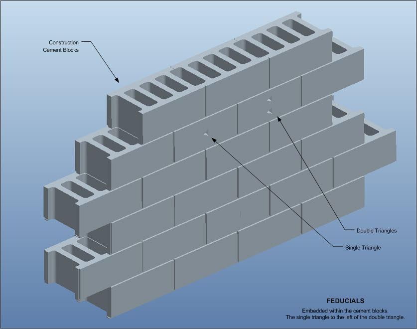
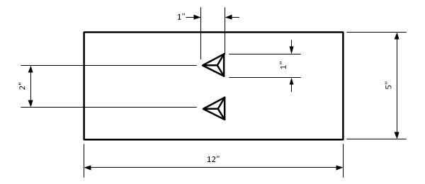

As the reader might recall, I was attending training to become a Naval Aviator for the United States Navy. One day, the base commander summoned me and another (known in this manuscript as Sebastian) and offered us a special role in a “new” program put in place by the President of the United States. We discussed the opportunity with him and we agreed to join the program. We exchanged our (very) valuable and coveted Naval Aviator positions for something else in a special program (otherwise) known as MAJestic. We stood up after the meeting with him and exited his office in the ELF sub-compound at the Naval base. This post discusses what happened next…
This is a very important post, but it is also a bit bland. There are segments within this post that are very valuable. I would suggest the reader pay attention and be on the outlook for those nuggets of gold.
We Began Immediately
The first thing that happened after we signed up for the program was [1] an introductory lecture on what a SAP was, and [2] the training associated with brain-centering technology. This chapter discusses that subject.
We left the office, then went a short distance down the hall. We exited the building, crossed the parking lot and entered an adjacent building that was nearby. It was the largest building in the sub-complex and I thus assume that it was the most important.
“The classification was, from the outset, above Top Secret, so the vast majority of U.S. officials and politicians, let alone a mere allied minister of defense, were never in the loop . . . “ -Paul Hellyer, former Canadian Minister of Defense (2005)
We opened a side door and went in. We found ourselves in a large dim warehouse. It was bare for the most part with a few huge objects covered with large canvas tarps off to the sides. There was a small group of approximately twenty people, all women, clustered around a relatively tall petty officer who was explaining things on a portable chalkboard. There was another seaman, off to the right, standing against the cement brick wall. We walked closer to observe, but stayed apart from the group.
We just stood there and watched the presentation.
The Lecture
“I now (personally) have three completely independent examples of individuals whom I trust reporting to me that individuals they trust have admitted to handling alien materials in "our" possession in the course of secret official duties. And in yet two more cases, I am similarly one (trustworthy) step removed from a former head of a federal government agency who was involved with reverse engineering efforts and a head of state of a G8 country who also said he had been officially briefed on that program. Now the Air Force Project Blue Book of the 1950s and 1960s did have both a public and a classified side. I suspect that after the public half of Blue Book closed up shop following the Condon Report, its classified half may have continued, existing today as a black special access program…” -Bernard Haisch. (ufoskeptic.org)
We missed the beginning of the presentation, but it was easy to follow the lecture.
We listened intently, not quite understanding everything that he was talking about. While the basic idea was simple, he was using unfamiliar terms, and referring to units and organizations that we knew nothing about, but apparently referred to the audience he was addressing. He spoke expertly as if he had made this presentation numerous times before.
The audience, that he was making a presentation to, had nothing to do with us.
I assume. Perhaps they were staff that were being trained to be the “black widows” that retired agents. Perhaps they were being trained to do various secretary level activities. Perhaps they were part of some kind of off-world breeding program. Who the heck knows?
They were all female, wearing civilian clothes, and all very attractive. We walked into a “mother-load” or attractive girls. They were all beautiful, and ranged from cute to full blown stunning. They were there at the ELF facility for other purposes unrelated to us. We knew nothing about them and they knew nothing about us. We were entering one SAP program. They were entering another. Both programs were under MAJestic control. Both programs utilized static portal access. Both programs required us to register our desires.
The Level of Secrecy
We listened to the presentation.
He explained to us that we were all joining a special program. (The name of the program was not given; or if it was, I do not remember it.) This program was an “Unacknowledged (When questioned; a government official will deny and disavowal knowledge and understanding and existence of the project.) Special Access Program” (U-SAP).
Special access programs (SAPs) in the federal government of the United States of America are security protocols that provides highly classified information with safeguards and access restrictions that exceed those for regular (collateral) classified information. It may be a type of black project. In addition to collateral controls, a SAP may impose more stringent investigative or adjudicative requirements, specialized nondisclosure agreements, special terminology or markings, exclusion from standard contract investigations (carve-outs), and centralized billet systems. Two types of SAP exist: acknowledged and unacknowledged. The existence of an acknowledged SAP may be publicly disclosed, but the details of the program remain classified. An unacknowledged SAP (or U-SAP) is made known only to authorized persons, including members of the appropriate committees of the United States Congress.
The nature of the program and the tasks that we were involved in required that we be implanted with special memory controlling technology. As it was explained to us, this was necessary for our own safety. It doesn’t matter which program that you are in or what role you will have in that program. Everyone must be implanted with probes in their brain. Not all probes are the same, and some probes have other functions other than for security. But, everyone in our class of SAP, absolutely MUST be implanted with a basic kit.
“Everyone in the program must be implanted with probes in their brain.”
He then looked at me, Sebastian and the Commander. He nodded at us, and added that some of us would be involved in even more secretive programs. These were very important programs, and required even more important (or complex) technology.
He called the program that we were to be involved in as a” Waived Unacknowledged Special Access Program” W(U)-SAP. He said that these programs report to the highest levels of authority and answer to absolutely no one else.
Waived SAP's are a subset of unacknowledged SAP's in the Department of Defense. These SAP's are exempt by statutory authority of the Secretary of Defense from most reporting requirements and, within the legislative branch, the only persons who are required to be informed of said SAP's are the chairpersons and ranking committee members of the Senate Appropriations Committee, Senate Armed Services Committee, House Appropriations Committee, and the House Armed Services Committee.
Of course, to us at that time, it was all “Greek” to us and went completely over our heads.
That's Greek to me or It's (all) Greek to me is an idiom used in the English language. It basically expresses that something is not understandable. The idiom is typically used with respect to the foreign nature, complexity or imprecision of verbal or written expression or diagram, often containing excessive use of jargon, dialect, mathematics, science, symbols, or diagrams.
Implantation
Thus, before we could begin our mission assignment, we needed to be implanted. And before we can operate with the implants we first need to know how to use them. Fundamentally, to use them, and unlock their full range of capabilities, you need to be able to focus and control your mind. Not everyone has had a course in transcendental meditation, and because of this external tools and techniques are used to focus your mind. The purpose of this was to (more or less) put our mind in “idle”. We had to turn off random thoughts and random synapses firing, and be able to “calm” the activity in our brain down to a “neutral” level of activity.
Implantation (that he was referring to) is the physical placement of small (I assumed to be computerized) probes inside your brain. There are different kinds of probes and they come in different forms and styles; known as “kits”. To use the probes, they had to be engaged, and to engage the probes the mind needed to be “centered”.
The implants, or probes, have different capabilities.
- They enabled us to be tracked.
- They enabled us to be identified, because each probe has a unique identification signal.
- They enabled us to control and improve our memory to some extent.
- They gave us the ability to learn new skills and knowledge, with the proper training.
- They also permitted the compartmentalization of our memories to prevent secrets from falling into the hands of adversarial forces. This included the suppression of memory (though memories are never erased).
- They also have the ability to monitor body functions.
- They also have a limited ability to control various bodily functions.
The ability to control our biological functions were mostly retarded. They could somewhat control our muscle reasons, making them quick or slow. They could improve or retard the efficiency of our biological functions such as the stomach, kidney, liver, and genitals. They could also affect our general health through use of these controls.
Finally, and most importantly,
- He said that the most important aspect of the probes was that they were a kind of special key that enabled us to “unlock” a very special kind of door.
All of this caused some concern with the ladies. However, he reassured them, and told them not to worry.
He said that the strictest protocols were involved and absolutely no one would misuse the program. Further, access of the probes was by a very rigorous method that precluded accidental or malevolent abuse.
He specifically told the young ladies that no one would alter their emotional desires unless there were good cause to do so, and that no matter what happens, they would always retain who they were. Their personality would never be affected.
Finally, he stated that the probes were only used sporadically, and they are never used unless really good reasons justify it.
Further, he assured them that one’s memory is never truly erased. That would require extensive cranial surgery. Instead, the way our brain searches for the memory is altered. People still remember everything. All the training, and the missions, are remembered. However, they lose their significance, their value and their importance. The events become ‘commonplace’. An example would be like the fifth time when you opened the bathroom door in your grandmother’s house. Remembered, but considered to be unimportant.
Context-dependent memory refers to improved recall of specific episodes or information when the context present at encoding and retrieval are the same. In the case of the probes this is easily facilitated or retarded depending on the memory. Thus, a given memory can be blocked through withholding items that aid in the recall of it. One particularly common example of context-dependence at work occurs when an individual has lost an item (e.g. lost car keys) in an unknown location. Typically, people try to systematically "retrace their steps" to determine all of the possible places where the item might be located. Based on the role that context plays in determining recall, it is not at all surprising that individuals often quite easily discover the lost item upon returning to the correct context.
Now, not all probes could do this, but ours could. They monitored temperature, pulse, blood pressure and mental activity. They also monitored eye movement and what our visual cortex observed, including dreams and thoughts that had a visual component.
If our thoughts accessed the visual cortex they could be observed remotely. I tell the reader this two times; what we viewed though our eyes was physically observed by our handlers at MAJestic. Therefore, if I watched a movie, read a book, had sex, or ate a pizza, the handlers, if they were monitoring me, could observe exactly the same things that my eyes saw.
This was twenty years before Bill Clinton (D) became President and started using each and every resource at his fingertips to push his own domestic agenda, often not even knowing what the resources were used for and what impact they would have on other programs. When Hillary Clinton was Secretary of State, it is well known that she surrounded herself with a large number of “special” women who were fiercely loyal to her. Knowing what I do, I can’t help but muse about the source of this loyalty.
Focusing for the Probes
In order for us to best be able to use the probes and utilize their features, we needed to be able to access them. To do this, we needed to be able to calm and center our mind. And, to be able to do that, we need to be instructed to use the tools provided to do so. The probes would not operate efficiently unless the brain and thoughts were “centered”.
There were numerous methods, but the one adopted by the US Navy was the “fiducial” method.
Learning How to Focus using the Triangular Feducials
The feducials in the cement blocks was a unique, but important element of the ELF program. These symbols are used to center, focus and control the mind.
It is a simple and easy system. Throughout the United States are grey cement block buildings, walls, and other structures. This is a universal and standardized building material in America. This common building material is used as the focusing medium for the ELF program. (This is not the case in other nations or countries. There are different kinds of building materials, bricks, sheet panels, and other building elements too numerous to mention here. But, in the USA the plain, unadorned, cement block is the most common building element.)

There are two special cement blocks. They are placed side by side. The block on the left contains only one triangle. It is shaped into the mold used to create the block. It is not chiseled in. The second block on the right contains two triangles. One above the other. Each triangle is one inch long and 1 inch high. It is approximately 1/2 inch deep. The angles on the triangle are oriented in such a way that the left side edge is vertical. And the other two edges of the triangle are at a 30 degree angles off from the horizontal. This is true for both blocks.

During the presentation, the seaman standing against the wall, would move his left hand in an open hand gesture to show the fiducial imprints that was being discussed. He first pointed to the fiducial triangle in the left block. Then, in short order he took a few steps and then pointed with his open hand to the two right fiducial triangles. It was a simple method and very easy to understand.
You know, that might make a nice Tee-shirt. You could put a picture of the three triangles on the shirt. Maybe have it white on black.
Using the Focus Method
To use the feducial focusing method, you relax your vision. As you do so, the image blurs and the two images superimpose over each other. Such then it appears that there are three triangles in a straight line. One above each other. This is an important relaxation step. That is because the visual cortex has to be stabilized in order to properly operate the probes.
It wasn’t any more complicated than that. To operate the probes, the mind must be relaxed by using the feducial triangle relaxation method.
The presentation ended, and the two seamen and their all-female audience left the building. We three; Sebastian, myself and the Commander, walked forward past where the presentation was held and entered another door, which led into a wide well-lit hallway. We followed the corridor for a few seconds and found ourselves in a wide open room. He stepped out for a minute and returned with a Naval doctor and told us that we would be “in good hands”, and that he would return later to get us.
He then left us there.
Three Triangles as an Identification Nomenclature
One of the common identification nomenclatures between differing black project groups is the three triangle symbology.
Obviously, for us, the three triangle symbology refers to the indexing feducials used to focus our attention when entering the primary implantation facility. These symbols are always chiseled into the cement blocks of all facilities that have ELF transmitter access. (The investigator will find these feducials in the basement walls of certain government and state buildings, intake barracks of prison facilities, military bases, and in certain secure agency buildings.) In general, where there is a transmitter, the ‘software’ inside the implants can be accessed.
Typically, where a fiducial is found, a small localized transmitter is located inside a nearby locked closet. Typically the closet has a heavy gauge door with secure hinges and high-security lock mechanisms. The transmitter inside has its own breaker box, and is used to provide a kind of localized field (of which I can in no way describe) that is benefited by a person focusing on the feducials on the wall.
Always, without exception, we need to be activated under controlled conditions. Thus, the feducials are an important part of a mind relaxation technique to harmonize the mind. As such, those who are using the fiducial triangles to focus upon needs to do so in a secure, safe and private environment. Typically, in many buildings, this can be achieved by accessing the feducials and transmitter after common working hours, or though the establishment of a safe area through locking the doors and providing a safe environment.
I do not know if this is the same reason that other black project participants identify themselves, but I suspect that it might be.
I make this statement because I know (from the doctor) that some of the other agencies and organizations get implanted and they also need to focus their minds to utilize the calibration routines for the probes. If you are part of the highest levels of MAJestic, or part of one of the many specialized (associated) SAP programs you will be implanted. If you are not implanted, the program that you were part of was NOT important enough. (Although I do not know of the differences from the MAJestic probes and the probes of non-MAJestic operatives.)
What I do know is this. Make no mistake. If you are a member of MAJestic, you will have the implants, and you WILL be able to use the “key” to access the “portal” door for MWI access and world-line egress.
It is well known that some alphabet groups use a triangle for membership identification. This is most often shown on a ring with a triangle on it. Some people state that this indicates allegiance with the illuminati.
The Illuminati (plural of Latin illuminatus, "enlightened") is a name given to several groups, both real and fictitious. Historically, the name refers to the Bavarian Illuminati, an Enlightenment-era secret society founded on May 1, 1776 to oppose superstition, prejudice, religious influence over public life, abuses of state power, and to support women's education and gender equality. For the record, I have no opinion whether or not this group is still active at this time.
Some people claim that it belongs in association with other occult groups. Still others believe that this is associated with secret societies. Alternatively, they might claim that it represents “the all seeing eye”.
The Eye of Providence (or the all-seeing eye of God) is a symbol showing an eye often surrounded by rays of light or a glory and usually enclosed by a triangle. It is sometimes interpreted as representing the eye of God watching over humankind (or divine providence). In the modern era, the most notable depiction of the eye is the reverse of the Great Seal of the United States, which appears on the United States one-dollar bill.
I know nothing about all of that. The conspiratorial theories that seem to propagate around the New World Order, and the triangle nomenclature are foreign to me. I was never asked to join such an organization, nor was I ever exposed to any except peripherally. As far as I am concerned, the similarity between the three triangle nomenclature and the secret society nomenclature is coincidental at best.
As a conspiracy theory, the term New World Order or NWO refers to the emergence of a totalitarian one-world government. The common theme in conspiracy theories about a New World Order is that a secretive power elite with a globalist agenda is conspiring to eventually rule the world. Their plan is to do so through an authoritarian world government which replaces sovereign nation-states. They manufacture this narrative through an all-encompassing propaganda agenda that ideologizes its establishment as the culmination of history's progress. Significant occurrences in politics and finance are speculated to be orchestrated by an unduly influential cabal operating through many front organizations. Numerous historical and current events are seen as steps in an on-going plot to achieve world domination through secret political gatherings and decision-making processes.
I do not consider myself a member of this or any related organization in any way. Nor do I know factually if any of the NWO, and secret societies actually exist. While I do believe in conspiracies, and “the deep state”, I can offer no proof that it actually exists.
Next Phase
You can read about what happened after this short period of training. I wrote about it HERE.
I had to get my MAJestic probes installed. Then I needed to have a kit of extraterrestrial probes installed.
Take Aways
- After I joined MAJestic, I participated in a lecture discussing “Special Access Programs” and probes.
- The probes would be surgically inserted in our brains.
- The probes controlled our memories, and possibly our emotions.
- The probes acted as a kind of “key” that could open a special type of door or portal.
- In order to utilize the probes, we needed to be trained to calm and center our mind.
- The method we were trained to do so was the “Feducial” method.
FAQ
Q: What was the purpose of the young ladies there?
A: I do not know. We only shared the lecture with them. Later on we entered a ELF gateway center together. However, we all had different destinations.
Q: Can you enter the “gateway” without using the feducials?
A: Maybe you actually can. But, I wouldn’t want to try. The MWI is and can be quite dangerous. You might really mess up your brain in doing so. You really don’t want to take risks with technology that you know nothing about. Right?
Q: How do you know what the dimensions are for the feducials?
A: When I was in the ADC, at the Pine Bluff facility, as I entered my retirement, the feducials were right outside my cell. That floored me. I well remember walking up to the wall to see if they were real. I then measured them using my fingers to confirm the dimensions.
MAJestic Related Posts – Training
These are posts and articles that revolve around how I was recruited for MAJestic and my training. Also discussed is the nature of secret programs. I really do not know why the organization was kept so secret. It really wasn’t because of any kind of military concern, and the technologies were way too involved for any kind of information transfer. The only conclusion that I can come to is that we were obligated to maintain secrecy at the behalf of our extraterrestrial benefactors.


MAJestic Related Posts – Our Universe
These particular posts are concerned about the universe that we are all part of. Being entangled as I was, and involved in the crazy things that I was, I was given some insight. This insight wasn’t anything super special. Rather it offered me perception along with advantage. Here, I try to impart some of that knowledge through discussion.
Enjoy.


MAJestic Related Posts – World-Line Travel
These posts are related to “reality slides”. Other more common terms are “world-line travel”, or the MWI. What people fail to grasp is that when a person has the ability to slide into a different reality (pass into a different world-line), they are able to “touch” Heaven to some extent. Here are posts that cover this topic.


John Titor Related Posts
Another person, collectively known by the identity of “John Titor” claimed to utilize world-line (MWI egress) travel to collect artifacts from the past. He is an interesting subject to discuss. Here we have multiple posts in this regard.
They are;